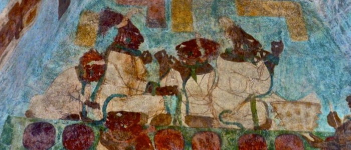
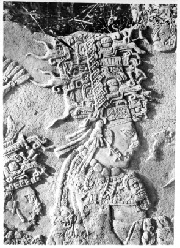

En la Selva Lacandona, en el valle del río Lacanhá, se encuentra un importante patrimonio histórico de la cultura maya. Descubierto en la década de 1940, el sitio arqueológico de Bonampak, conocido como “Paredes Pintadas” en lengua maya, es conocido por sus murales excepcionalmente conservados que representan escenas de guerra, tributos y la captura de prisioneros como sacrificios.

Esta ciudad maya tiene 18 siglos de antigüedad y data entre el 600 y el 800 d.C. Sus estructuras incluyen una plaza central rodeada de edificios religiosos, administrativos y residenciales. Al sur de la plaza se encuentra la acrópolis, formada por grandes estructuras con cúpulas. También destaca el Edificio de Pinturas, compuesto por tres salas decoradas con los murales mejor conservados del México antiguo.

Notas relevantes:
Uno de los murales muestra una batalla entre Chan Muwan II, gobernante maya, aliado
con la ciudad vecina Yaxchilán, contra los dirigentes de Bonampak. La batalla terminó con la victoria de Chan
Muwan II. Este evento se conmemora en la Estela 1 como un símbolo del poder de Chan Muwan II. En otro mural, se
representa al gobernante junto a su familia, practicando un ritual de sacrificio con navajas de obsidiana.